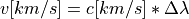
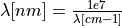
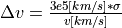

How LUCI Works¶
LUCI is a general purpose line fitting pipeline designed to unveil the inner workings of how fits of SITELLE IFU datacubes are calculated. In this section, I will explain what we are trying to calculate, how it is calculated, and how you can personalize the fits.
What we calculate¶
The three primary quantities of interest are the amplitude of the line, the position of the line (often described as the velocity and quoted in km/s), and the broadening of the line (often described as the velocity dispersion).
Velocity¶
The velocity of a line is calculated using the following equation: 
c is the speed of light in kilometers per second. Delta lambda is the shift of the measured line. Although the line
position is calculated in units of [cm-1], we translate it into nanometers since .
At the moment we only calculate the velocity for the Halpha line. Therefore ![\Delta \lambda = (line\_pos[nm]-656.28)/656.28](_images/math/1e2a37d1d3cb8b77c0e080770236cd62f266f6bf.png) where 656.28 nm is the
natural position of Halpha emission. We plan on extending this to other lines.
where 656.28 nm is the
natural position of Halpha emission. We plan on extending this to other lines.
Velocity Dispersion¶
The velocity dispersion of a line is calculated using the following equation: 
where  is the calculated width of a the fitted Gaussian.
is the calculated width of a the fitted Gaussian.
How we calculate¶
Once we have a spectrum, we do two things: we normalize the spectrum by the maximum amplitude and we apply a redshift correction (wavelength = wavelength*(1+redshift)). We do this primarily to constrain the velocity to be between -500 and 500 km/s. This allows our machine learning technique to obtain better initial guess estimates.
Initial Guess¶
Having a good initial guess is crucial for the success (and speed) of the fitting algorithm. In order to obtain a good initial guess for the fit parameters (line amplitude, line position, and line broadening), we apply a machine learning technique described in Rhea et al. 2020a (disclosure: the author of this code is also the author of this paper). The method uses pre-trained convolutional neural networks to estimate the velocity and broadening of the line in km/s. These are then translated into the line position and broadening. Next, the amplitude is taken as the height of the line corresponding to the shifted line position. We note that the machine learning model has only been trained to obtain velocities between -500 and 500 km/s. Similarly, the model was trained to obtain broadening values between 10 and 200 km/s. You can find more information on this at https://sitelle-signals.github.io/Pamplemousse/index.html <https://sitelle-signals.github.io/Pamplemousse/index.html>
Since we understand that machine learning is not everyone’s cup of tea, we have an alternative method to calculate the initial guesses.
Fitting Function¶
The fitting function utilizes scipy.optimize.minimize. Currently, we are using the SLSQP <https://docs.scipy.org/doc/scipy/reference/optimize.minimize-slsqp.html> optimization algorithm. Before fitting the spectrum, we normalize the spectrum by the maximum amplitude – this makes the fitting process simpler. We also constrain the amplitudes to be between 0.001 and 1.1, the position of the line to be between 14700 and 15600 [cm-1], and the sigma of the Gaussian to be between 0.001 and 10. By applying these bounds, we constrain the optimization problem. The fit returns the amplitude of the line (which we then scale to be correct for the un-normalized spectrum), the velocity in km/s, and the velocity dispersion in km/s. If the user choses, the line velocities and velocity dispersions can be coupled.
Available Models¶
For the moment, we only have a Gaussian implemented. We plan on adding a sinc and sincgauss.
Gaussian¶
We assume a standard form of a Gaussian: .. math:
A*exp{(-(x-x_0)**2)/(2*sigma**2)}
We solve for A, x_0, and sigma (x is the wavelength channel and is thus provided). A is the amplitude, x_0 is the position of the line, and sigma is the broadening.
Uncertainty Estimates¶
Since uncertainty estimates are often crucial in astrophysical calculations, we apply a full Bayesian MCMC approach (using the python module emcee). The likelihood function is defined as a standard Gaussian function. Additionally, we employ the same priors described above for the fitting function bounds.